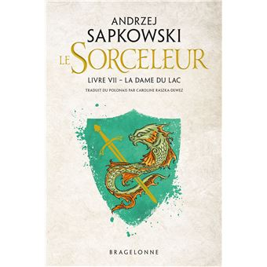

T7 : The Lady of the Lake
While Yennefer is held prisoner and Geralt spends the winter in the company of the enchantress Fringilla, Ciri is thrown into a parallel world when she enters the Swallow's Tower. Now under the control of the elf Avallac'h, she can only hope for freedom if she agrees to bear the Alder King's child. Will the young girl manage to escape to rescue her friends?
